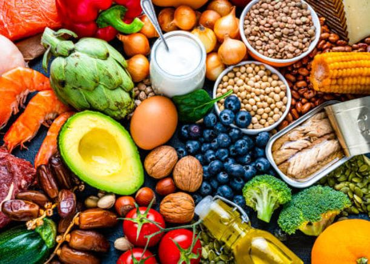

Nutrição refere-se à ação de aproveitar os nutrientes obtidos dos alimentos. É um processo biológico por meio do qual os nutrientes de que nosso corpo necessita para o crescimento e desenvolvimento adequado das funções vitais são absorvidos dos alimentos e líquidos.
Nutrição também se refere ao estudo da relação entre alimentação, saúde e a criação de uma dieta balanceada combinada com exercícios físicos regulares. Com uma boa alimentação, muitas doenças comuns ou propensões a ter uma determinada doença, como diabetes, podem ser evitadas ou, na falta disso, aliviadas.
Ter uma vida saudável depende muito do que o indivíduo consome durante sua vida. A alimentação está diretamente ligada ao funcionamento do organismo como também à qualidade de vida. A Nutrição faz parte da vida de todo ser humano, com a ingestão de alimentos saudáveis, o corpo recebe os nutrientes, vitaminas e minerais necessários para manter o funcionamento adequado, inclusive prevenindo doenças como obesidade, anemia, diabetes, entre outras.
De acordo com a nutricionista Ziletai Nascimento, o alimento adequado faz toda a diferença na saúde e na vida, promovendo o bem-estar físico, mental e social. “Consumir alimentos de forma errada pode desencadear uma série de problemas de saúde e comprometer a qualidade de vida”.
Coma alimentos variados: inclua frutas, verduras e legumes em todas as refeições, priorizando cores diferentes para obter uma variedade de nutrientes. Escolha proteínas magras como frango, peixe e feijão, que são boas opções para garantir a saciedade e fornecer os aminoácidos necessários ao corpo. Opte por grãos integrais como arroz integral e aveia, que são ricos em fibras, auxiliam na digestão e promovem sensação de saciedade. Reduza o consumo de alimentos processados como salgados e refrigerantes. Esses alimentos industrializados costumam ser ricos em sódio, açúcar e gorduras saturadas, devendo ser consumidos com moderação. Beba água regularmente, mantendo-se hidratado ao longo do dia, consumindo pelo menos 2L de água diariamente, de preferência entre as refeições.